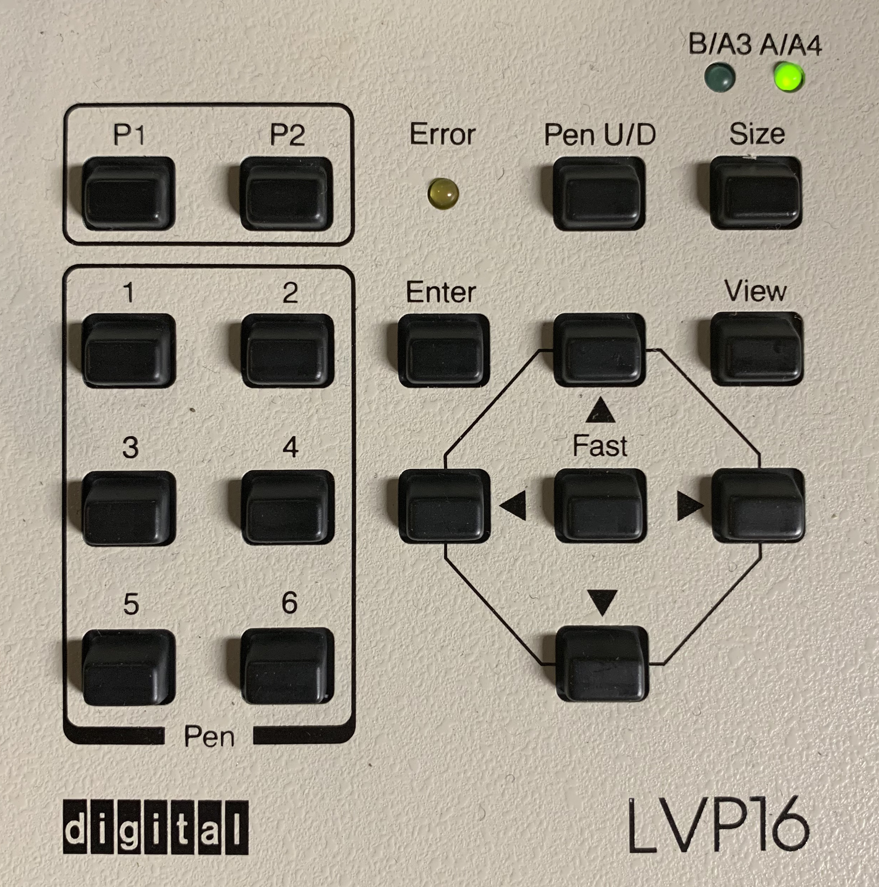
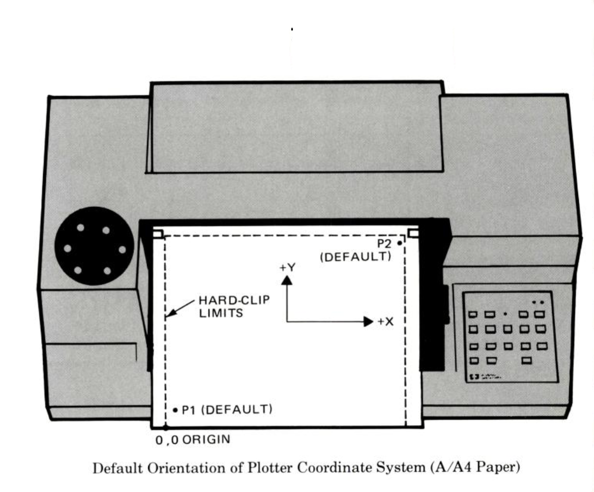
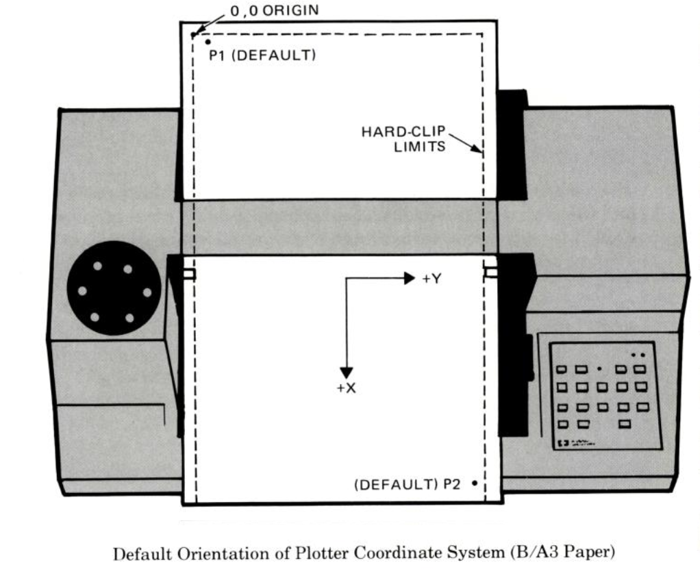

This is the Digital LVP16 pen plotter. It's the same as the classic HP7475a model, and was introduced in 1983 selling for US$1895. Despite its age, you can do cool things with it.
You should be able to discover the plotter on the network.
Alternatively, this link will add it:
ipp://penplot1.local/
The plotter uses up to 6 pens. There's a selection of colors of original pens, not all of them draw very well. Additionally there are Sharpie adapters if you want to use your own.
The standard pen color positions are: 1=black 2=red 3=green 4=yellow 5=blue 6=magenta
But use whatever colors are appropriate. Also, you can just insert a single pen directly into the holder, and remove the carousel.
Remember to re-cap the pens when you're finished, otherwise they'll dry out and become useless. Please put "bad" pens into the "bad pens" box. Don't throw them away, we may be able to refill them.
Check that the paper-size light is set appropriately, to "A4"/Letter or "B4"/B size. To switch paper size, press ENTER and SIZE together.
Lift the paper-release lever. The ERROR light will come on. (This is OK).
Place a sheet with its far edge just behind the roller, by the mark. Lower the paper-release lever.
Then check the P1 and P2 "scaling points". Think of these as the zero-point (P1), which is at the bottom left of a landscape-oriented page, and the opposite corner (P2), which is at the top right of a landcape-oriented page.
Press the P1 button, and the pen and paper will move to the P1 position (pen to the far left, and near the "bottom" edge of the page, when looking at the page as a landscape). Then press the P2 button, and the pen and paper will move to the opposite corner. Check that the paper is still held correctly at both these points.
 
Then you're ready to print.
You can print any document from Windows or MacOS. Be careful: complex documents will take a very long time to print. Please be considerate! Start with simple line-drawings, and then try small amounts of shading or text.
You can also print files directly if they are in the printer's native "HPGL" format, or SVG or PDF. For example you can export Inkscape drawings in HPGL or SVG. There are also HPGL connectors for Processing, D3.js and so on. You can even write HPGL by hand (it's quite simple).
To print a file from a Linux or MacOS command-line, first check that you have installed the printer named `penplot1_local`:
lpstat -p -dThen, to print an HPGL file named 'FILENAME.plt':
lp -d penplot1_local -o raw FILENAME.pltOr, to print an SVG file named 'FILENAME.svg':
lp -d penplot1_local -o raw FILENAME.svg
Check out #plottertwitter and the tools at drawingbots.net for inspiration, people are writing programs that produce some really interesting plots.
Sometimes you want to talk to the plotter interactively, as if it's connected directly to your computer. This lets you use programs such as Chiplotle, which can be really powerful and flexible.
Do this using socat:
TODO
You shouldn't need to change the other settings. The usual settings should be: 4800 baud, one stop bit, no parity.